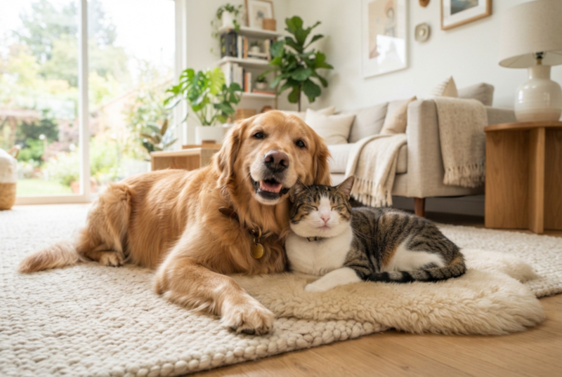
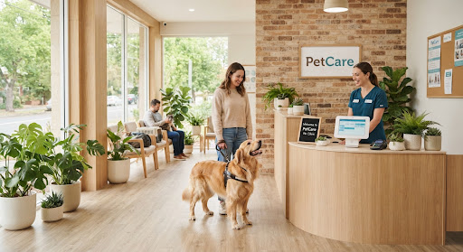

Cuidado especializado,
naturalmente.
Oferecendo uma combinação premium de ciência veterinária moderna e bem-estar holístico para seus amados companheiros.

Serviços de Bem-Estar Holístico
Cuidados abrangentes, concebidos para promover todos os aspectos da saúde e da felicidade do seu animal de estimação.
Cuidados Pessoais Orgânicos
Tratamentos com qualidade de spa, utilizando apenas produtos naturais e hipoalergênicos que acalmam a pele e a pelagem.
Saber maisCuidados Veterinários Integrativos
Combinando diagnósticos modernos com terapias alternativas, como acupuntura e consultoria nutricional.
Saber maisCreche com Atividades de Enriquecimento
Sessões de brincadeiras planejadas em nossos parques cobertos inspirados na natureza, com foco na socialização e na estimulação mental.
Saber maisEnraizado na natureza, Impulsionado pela ciência.
Na Paw & Pulse, acreditamos que o verdadeiro bem-estar dos animais de estimação exige uma abordagem equilibrada. Nossa filosofia baseia-se em práticas orgânicas e sustentáveis que respeitam os instintos naturais do seu animal, ao mesmo tempo em que aproveitam o melhor da medicina veterinária moderna.
-
Produtos 100% orgânicos e atóxicos utilizados em todas as instalações.
-
Técnicas de manejo livres de estresse certificadas por especialistas.
-
Operações sustentáveis que minimizam nossa pegada de carbono.

Faça parte do Círculo de Bem-Estar
Inscreva-se para receber dicas de cuidados holísticos para pets, convites para eventos exclusivos de bem-estar e novidades sobre produtos orgânicos sazonais.